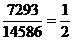
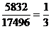
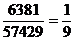
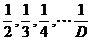

H |
Fractions |
|
|
Input: Standard Input Output: Standard Output |
|
|
You might find it interesting that the digits 1, 2,…9 may be arranged to form two decimal numbers whose ratio is . For example:
, , …, 
This fact is also true for most other number systems. So in general we can say that the digits 1, 2, …, D may be arranged to form two (D+1) based numbers whose ratio is . In this problem you will be asked to find such fractions. In other words given the base B and denominator N you will have to find two B-based integers P and Q (Both of them combined should use the digits 1, 2, 3, …, B-1 exactly once.) such that:
The input file contains at most 300 lines of inputs. Each line contains two decimal integers B (1<B<28) and N (1<N<B).
Input is terminated by a set where the value of B and N is zero. This set should not be processed.
For each set of input produce one line of output. This line contains the two input values followed by two B-based integers separated by a ‘/’ (front slash). The two B-based integers denote the values of P and Q respectively. So they actually denote the fraction . There will be no such inputs for which P and Q cannot be found. If there is more than one solution any one of them will do.
|
10
2 10
9 14
4 0
0 |
10
2 7932/15864 10
9 8361/75249 14
4 CD5621/39B7A84 |
Problemsetter: Derek Kisman and Shahriar Manzoor